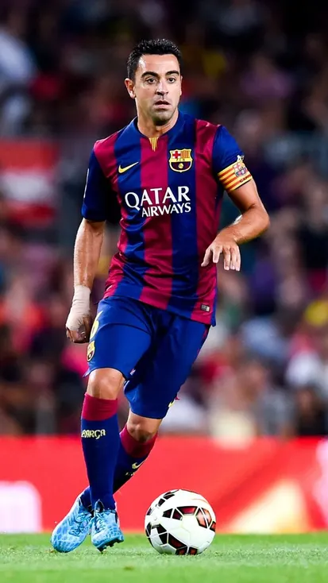
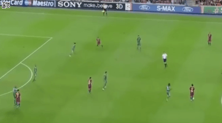

차비 에르난데스 Xavi Hernández
키 170cm / 체중 68kg
스페인의 축구 선수 출신 감독. 현 FC 바르셀로나 감독을 맡고 있다.로타어 마테우스, 지지와 함께 축구 역사상 최고의 중앙 미드필더 중 하나로 평가받는다. 또한 스페인 역사상 최고의 선수이자 이니에스타와 함께 바르셀로나 최고의 미드필더로 여겨진다. 중앙 미드필더뿐만 아니라 모든 미드필더를 기준으로 해도 굉장히 높은 평가를 받는다.
스페인의 전무후무한 메이저 대회 3연패의 주역이자 바르샤의 2008-09 트레블을 포함한 6관왕 및 2010-11 챔스와 리그 더블을 포함한 5관왕, 2014-15 두 번째 트레블을 포함한 5관왕 등 2000년대 중반 이후 바르셀로나와 스페인의 역대급 헤게모니를 구축한 주역 중 1인으로서, 축구 역사 전체를 통틀어봐도 그만한 클럽, 국대 커리어를 이룩한 선수는 클럽과 국가대표의 전성기를 함께한 안드레스 이니에스타를 제외하면 거의 없다고 봐도 무방하다. 특히 과르디올라 체제 내에서 트레블을 달성했던 2008-09 시즌에는 대부분의 경기를 중앙 미드필더로 출전하면서 A매치 포함 71경기 11골 36어시스트라는 그야말로 경악스러운 스탯을 찍으면서 당대 최고의 미드필더로 확고히 자리매김하였다.

특히 패스 마스터란 별명답게 중원에서 경기 조율을 하는 역할을 넘어 여차하면 본인이 2선으로 침투해서 직접적으로 득점에 가담하거나 킬패스를 넣어주는 그야말로 패스의 신이라는 찬사가 아깝지 않을 정도의 활약을 보여줬고, 이러한 활약은 펩 과르디올라가 이끌던 당시 소속팀 바르셀로나와 스페인 국가대표팀의 황금시대를 이끄는데 큰 영향을 미쳤다. 실제 2015년 사비가 떠난 이후 바르셀로나는 챔피언스 리그에서 팀 위상 대비 기대 이하의 성적을 연이어 기록하며 강팀에게 처참히 무너지고, 스페인 국가대표팀도 UEFA 유로 2016 16강, 2018 FIFA 월드컵 러시아 16강에 그치면서 바르셀로나와 스페인이 이룬 업적에 사비의 비중이 얼마나 컸었는지 새삼 깨닫게 되었다는 재평가도 이뤄졌다.
그와 비슷한 시기에 활약했고 비슷한 길을 걸어온 안드레스 이니에스타와의 비교도 잦은데, 이니에스타가 사비보다 좀 더 다방면에서 훌륭한 선수였고 결승전과 같은 큰 경기에서 뛰어난 활약이 돋보였다면 사비는 적어도 중원에서는 그 누구도 상대할 수 없을 정도의 압도적인 기량과 꾸준함이 주무기였기 때문에 누가 더 나은 선수였다고 말하기 어렵다. 뭣보다 둘은 클럽과 국가대표에서 함께 최전성기를 이끌며 한 몸처럼 영혼의 파트너로 활약했기 때문에 누구 한 명을 떼어서 우위라고 따지기 힘든 면도 있다. 괜히 세 얼간이 드립이 나온게 아니다. 확실한 건 모두가 있었기 때문에 당시 바르샤와 스페인 대표팀이 압도적인 실력을 선보일 수 있었던 것이다.